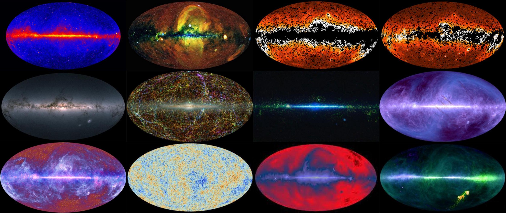
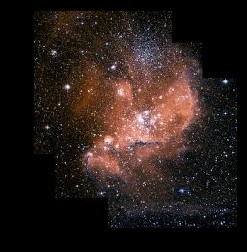
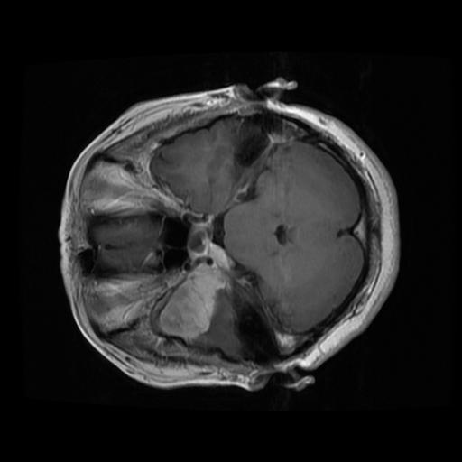
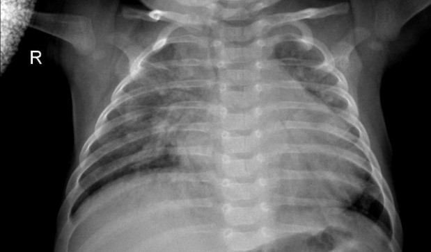
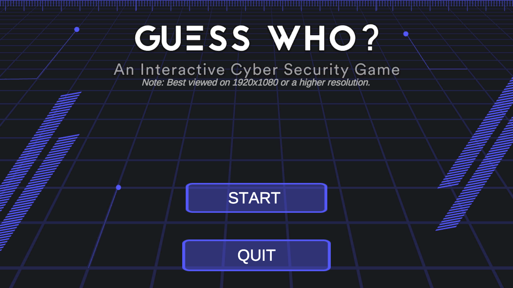

CUDAx365 Animation Set
Black Hole 3D Flow
Neural Radiance Field and MHD experiments for dynamic black-hole flow analysis, graph-kernel studies, and approximation visualizations.
 Ansh Mittal
Ansh Mittal
Machine Learning Engineer II
A simple black portfolio surface for the media from my personal website. The large top-panel astronomy MP4 is intentionally excluded; the project videos are kept below in dedicated tabs.

Project Videos
Each tab focuses on one project family. Videos are local to this repository so the GitHub Pages deployment does not depend on the Cloudflare media bucket.
CUDAx365 Animation Set
Neural Radiance Field and MHD experiments for dynamic black-hole flow analysis, graph-kernel studies, and approximation visualizations.
Volumetric flow visualization for dynamic astronomy scenes.
Temperature-contrast motion study for stellar material flow.
Combined graph-kernel animation for simulation pipeline review.
Small approximation clip for fast visual comparisons.
Volumetric U-Net
U-Net-style segmentation adapted from 2D slices to volumetric CT data with spatial context across adjacent slices.
Volumetric scan walkthrough for segmentation pipeline presentation.
EfficientNet B1
Fundus abnormality classification across 40 labels with fine-tuned pretrained CNNs for computer-aided retinal screening.
Model output and classification flow for retinal disease screening.
VAE + MDN-RNN + CMA-ES
A world-model agent pattern where a CNN-VAE compresses frames, an MDN-RNN predicts latent dynamics, and a compact controller is optimized over learned memory.
Latent visual model and controller demonstration.
AR + AI Insurance
An AR insurance workflow for inspecting policy objects and claim context in-place, with a path toward guided capture and damage triage.
Prototype app interaction for AR claim inspection.
Writing and Research
Media Archive
A compact gallery of project, course, astronomy, and research media copied from the existing site. The old icon library remains in the repository for compatibility.






Contact
Reach out for machine learning systems, computer vision, graphics, LLM optimization, and applied research collaborations.